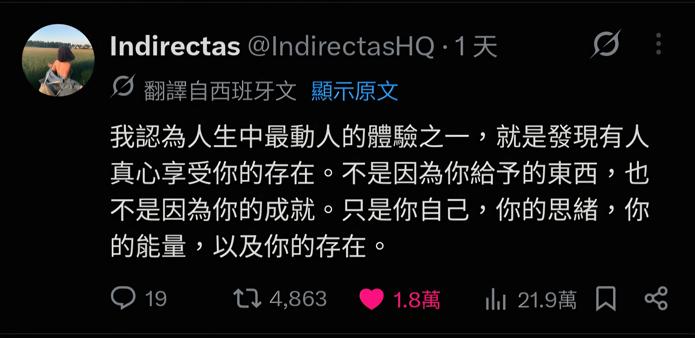

(本篇內容無使用 AI 工具協作)
關於寫作
自從在 Medium 發表第一篇文章至今，已經過了七年了。
哇！七年！除了驚訝，也替自己感到些許驕傲。
回顧當初踏上寫作之旅的契機，我覺得是「自卑感」，讓我想要做點事情來證明自己。
寫作的過程中，常遇到撞牆期，更新的頻率也忽高忽低，儘管如此，寫著寫著，這段旅程確實帶給我一些東西。
最近花了點時間整理，究竟寫作帶給我什麼樣的影響？
我想藉由這樣的分享，來鼓勵曾想過要嘗試寫作、或正在觀望中的讀者朋友們，踏上這趟旅程。
寫作帶給我什麼影響？
我認為寫作帶給我三個重要的影響。
提升「非同步溝通」的能力
我覺得在職場中「非同步溝通」是一項極為重要的技能。
每個人的專注力是十分珍貴的，善用「非同步溝通」能替自己和身邊的工作夥伴省下大量的專注力，去做真正有價值的事。
你能否透過文件、Ticket、電子郵件來進行有效的「非同步溝通」？ 你能否判斷當下的場景該使用哪一種溝通方式？
對我來說，這是有生產力的團隊成員必須具備的重要技能。
我在剛加入團隊的新人，可以做些什麼？ - 非線性的學習路徑分享過：我們習慣的「學習」是從「線性」的資訊中，嘗試「還原」出「非線性」的知識。
而寫作則是一種反向的訓練：把腦海中「非線性」的資訊，嘗試以「線性」的媒介呈現。
為了讓讀者更容易理解，你得去思考這段文字的「目標受眾」是誰？他們有什麼樣的背景知識？該用什麼樣的順序去闡述，讀者會吸收得更好？
在寫作過程中，你會自然而然地思考這些問題，開始站在讀者的立場換位思考，這有助於在工作時寫出「溝通效率高」的文字。
這是寫作帶給我的第一個影響。
感受到自己的價值
我是在寫作的過程中，慢慢感受到自己的價值。
我在寫給剛踏入職場的自己中有提過，剛離開學校時，曾因周圍的人和自己做出不同的職涯選擇，陷入一段時間的不安。
現在回頭看那樣的情緒，我覺得是對自己的選擇與判斷不夠有自信。
那個時候很常問自己：「我要進到什麼樣的公司，才算是一份好工作？」、「我是不是放假也得做點什麼，看起來才不會很廢？」
我不認為這樣的問題有標準答案，或者說，我在想，當初的我可能問錯問題了。
最近幾年在諮商的過程中，我覺得對自己的選擇不夠有自信，背後其實是「自我價值」的匱乏，也就是「我看不到自己的價值」，所以不敢相信自己的選擇。
現在的我會重新改寫當初的問題：
- 我是怎麼看待自己的價值？
- 我覺得自己是一個有價值的人嗎？
隨著我持續寫作，我開始意識到：
光是記錄自己腦中的奇思妙想，就是一件有價值的事！
當我發現自己寫出來的東西，是確實能造成別人的共鳴，甚至對他人產生影響時，感受到一股極強烈的情緒：
原來我不需要做什麼，也不需要刻意扮演什麼角色。只需要把內心思考的事情分享出來，這本身就是一件有價值的行為。
前陣子在 Thread 上看到的 Post 很符合這種感受：

在寫作過程中逐漸累積的價值感，是鼓舞我持續寫下去的動力之一。
有機會認識志同道合的社群夥伴
我是個「被動社交」的人：不太敢主動提出邀約、被邀約通常會開心答應、出門前開始焦慮、碰面後慶幸自己有赴約。
收到邀約，總是開心的，我很感謝「寫作」讓我有機會認識日常社交圈以外的人。
前陣子安排了 Gap week，休假前意外的收到 Kyo 的邀約。
前幾年在讀他的部落格時，一直很欣賞他的文章，除了深入且扎實的技術主題外，也有許多我感興趣的題材，例如 Cal Newport 及對多種筆記軟體的觀察。
寫完《踏實感的練習》：把目標從外在成效，調整成內在踏實感 後，收到他的留言回饋，當下十分驚喜，讓我更加確定在某部分的價值觀上，我們是志同道合的同好。
先前在讀《The Pathless Path - 無路之路》時，有一段讓我印象的深刻的文字：
「社群」是走在非傳統職涯上必不可缺的燃料。
和 Kyo 碰面時，我發現在聊寫作時，不需要過多鋪陳，就能很自在的闡述彼此的心得、價值觀及曾遭遇過的痛點。
雖然是第一次見面，但我察覺自己很輕易的進入「心流」，腦海中的想法源源不絕的冒出來，這是在日常生活中，我很少體驗到的狀態。
對話中，得到許多有意思的觀點，也藉此發現有些問題其實自己還沒有想清楚。
正是這次碰面，讓我開始整理「寫作」對我的意義，從而催生出了這篇文章！
(如果你對於我的文字有共鳴，也歡迎你約我聊聊，說不定我們也是失散已久的社群夥伴？😄)
關於寫作的反思與建議
我一直很喜歡一句話：「成為你曾經需要的那個人」。
如果是現在的我，會給當初準備開始寫作的自己什麼建議呢？
建立並相信自己的「品味」
剛開始寫作時，常抱持一種想法：「我要寫別人沒寫過的東西！」，但在 AI 蓬勃發展的時代，我想越來越難找到這種類型的題材。
例如我 2022 年開始使用 Obsidian，當時的筆記主流還是 Notion，為了想分享 Obsidian 的好，所以才出現了 Obsidian 系列。
隨著 LLM 出現，Obsidian 一夕爆紅，我反而覺得「哎呀！已經有很多人在分享了，好像沒必要分享了」，系列文也因此暫時進入停更狀態。
這種心態在大 AI 時代反而讓寫作變得寸步難行，選題時常會懷疑：「我到底還要寫些什麼？我寫的東西 AI 都已經知道了，那我還有必要寫嗎？」
我很喜歡 Kyo 分享的概念：寫作的過程就像是「知識的策展」。
前幾天讀到 Huil 大大的 AI 與鴨子，惰性與真實 ，裡面提到：
“科技的進步，讓電子垃圾也變得越來越多。”
當 AI 的進步讓越來越多人能透過大量的垃圾而獲利時，在我們的周遭就會充斥越來越多粗製濫造的內容，試圖奪走你珍貴的專注力。
最近讀了林琪香的《摘柿記》，是我近年來最喜歡的散文，閱讀過程中帶來的喜悅，是看再多篇「不是…而是…」的 AI 文章都無法替代的。
這讓我意識到：與其「創造」沒有人寫過的題材，不如「選擇」自己感興趣的題材。
對我來說，這是一種建立「品味」的過程，也就是你對於珍貴事物的「判斷」，這種判斷是非常主觀的。
若從「策展」的角度出發，寫作除了「選擇題材」外，還有試著在文字中「揉入自己的想法與價值觀」，從而創造出文章的「自我度」- 工作、職稱都是可以被取代的，只有我寫出的文字，能夠體現出差異，這種差異像是一種證明：「我就是我，我是不可被取代的」。
前陣子寫作時，非常依賴 AI，我會請 AI 協助我發想標題、編排骨架，整理摘要後再由我改寫。
產出文章的速度確實上升了，但我發現對於自己文章的共鳴卻下降了，換句話說：我得到許多「完成度」很高，但「自我度」很低的文章。
這有點像是「品質」與「品味」的取捨。
「品質」對我來說，是我對於這份素材的「信心程度」，當我查證過資料來源，確定內容正確，我會認爲這段文字是有「品質」的。
如果今天談論的是客觀的知識，我相信 AI 無論是廣度與深度，最終得到的「品質」，都遠勝於人類。
而「品味」則取決於個人的成長背景、看過的書、走過的路、經歷過的風浪。
我想寫作的本質並不單純是分享知識（在大 AI 時代，恐怕不需要特別依靠我的分享），而是把此時此刻覺得重要的事物和心態給「留存」下來，先前在一個觀念，改變你的筆記習慣中的一段話特別符合現在的感受：
“閱讀主觀感受時，最能讓人產生共鳴、身歷其境地感受特定時刻的記憶。”
「品味」的來源，正是文章中的主觀想法。
意識到這件事後，我開始想寫出「自我度」高，「完成度」未必高的文章。
當我把寫作中的越多部分外包給 AI，是不是代表我開始不信任自己的「品味」？我認為大量資料訓練出來的語言模型，比我更能代表我自己？
如果我是一個「策展人」，我希望自己能開始「創造並相信自己的品味」，抱持一種信念：「我是在送一份有價值的禮物給世界上的某人」。
儘管我不知道這個人是誰，我仍然相信我寫的東西是有價值的、是會對他人產生影響的。
先把目標讀者設定成「未來的自己」
寫作之旅的前幾篇是最困難的，很容易出現「哇！這東西寫出來真的會有人要看嗎？」的小劇場。
我蠻喜歡我為什麼鼓勵工程師寫 blog中的觀點，把寫作當成是一種「日記」壓力會小一點，將目標讀者設定成「未來某個時刻的自己」，記錄每個時期對什麼內容感興趣，累積一段時間後，可以直觀的觀察到自己的變化。
把你此時此刻認為重要的事記錄下來，可能是正在學習的技術（2020 年剛踏入職場寫的安裝 Miniconda 以及 Pytorch)、或是自己的體悟（2022 年剛轉職時寫下的剛加入團隊的新人，可以做些什麼？)。
把這些重要的事情留存下來，在某些時刻是很方便的，不只能提醒未來的自己，也能在需要時直接「匯出」給他人。
最近剛好在帶一個 Mentee，進行 Code Review 時，發現有些原則需要溝通，此時要把自己內化的原則整理出來會有點花時間，但剛好當初在學習 Code Review 的概念時，有留下一篇紀錄 - 成為更重視 Code Review 的工程師，這時候就派上用場了！直接傳連結給他，搞定！
帶給我寫作啟發的來源
在寫作之路上，我特別喜歡幾位前輩對於寫作的觀點，謝謝他們的引領，讓我持續走到今天，以下分享幾篇帶給我重要影響的文章或書籍：
- 我為什麼寫部落格，以及部落格帶給我的影響 | by Huli | Medium
- 每一篇心得都有價值——為什麼初學者才更應該要寫心得筆記 | by Huli | Medium
- 我為什麼鼓勵工程師寫 blog
- 時間看得見，所以不要再偷懶了 - Ruby 的藝文生活
- 《寫作課：一隻鳥接著一隻鳥寫就對了！》
- 《寫作，是最好的自我投資》
謝謝你的閱讀，希望你有朝一日也有機會踏上寫作的旅程，我們下次見。
About Byte & Ink
我會定期在部落格分享不同主題的文章，目前包含：
- 職涯心得
- 個人成長
- 筆記軟體 - Obsidian 教學
- 技術相關 (
K8S,DevOps,軟體測試…)
如果你覺得內容有幫助，歡迎你點此訂閱我的文章，你的訂閱會帶給我更多動力，持續分享有意義的內容！